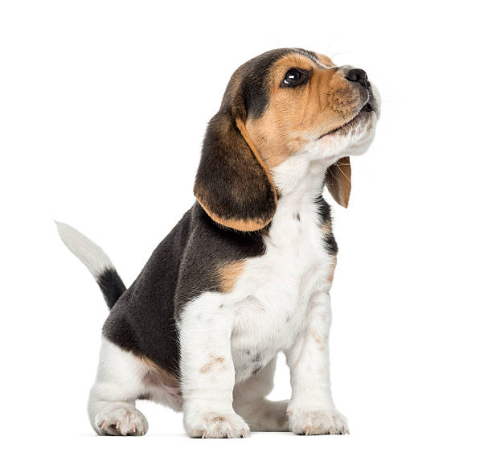

Beagle
| Wight: | 10 - 11kg |
|---|---|
| Coat | Short hair, hard coat of medium lenght |
| Color | Many colors |
The beagle is a breed of small hound that is similar in appearance to the much larger foxhound. The beagle is a scent hound, developed primarily for hunting hare (beagling). With a great sense of smell and superior tacking instinct, the beagle is employed as detection dog for prohibited agricultural imports and foodstuffs in quarantine around the world. The beagle is intelligent but single- minded. It is a popular pet due to its size, good temper, and lack of inherited health problems